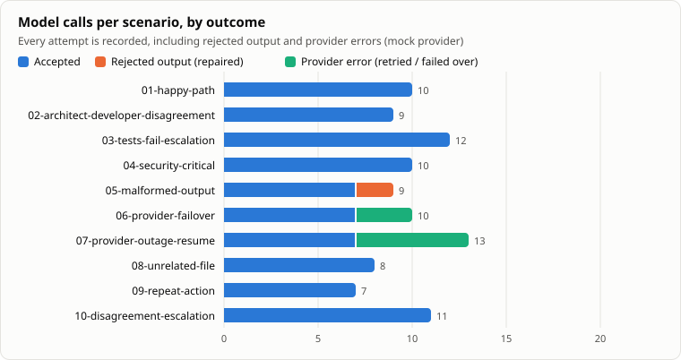
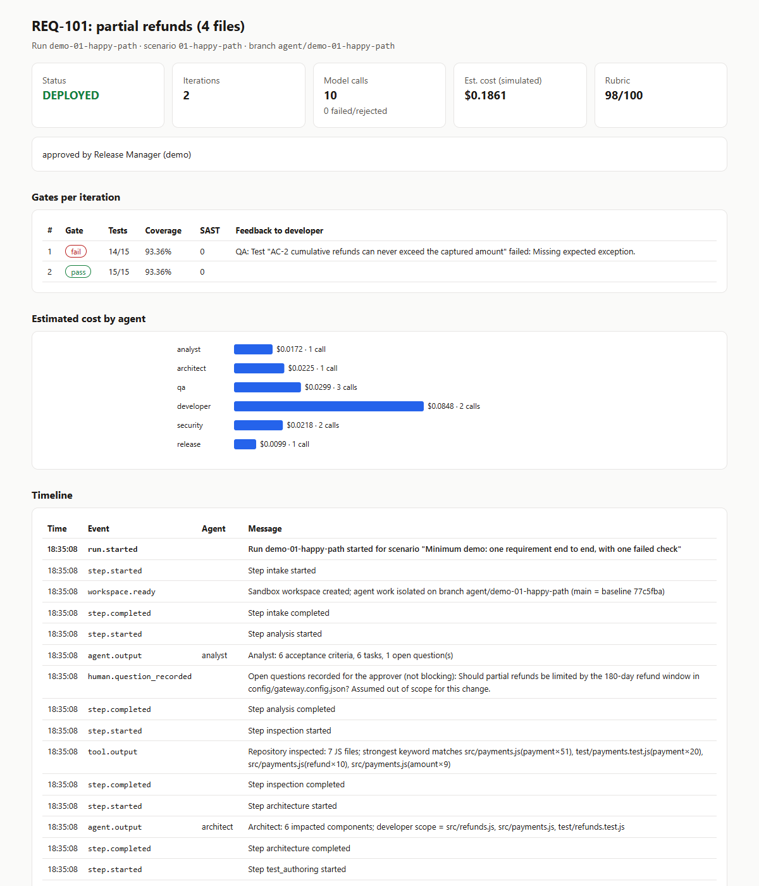

Autonomous Enterprise Engineering Organisation
AI agents ship the change.
A human decides if it merges.
Six specialised agents take one product requirement through analysis, design, QA-first tests, code, security review and a release pack. Deterministic tools decide pass or fail. Merge and deploy happen only after a named human approves.
- Agents
- 6
- Failure scenarios
- 10
- Tests
- 34
- Rubric vs human
- 98/100
Demo
The minimum demo, start to finish: REQ-101 goes through every agent, the first implementation fails a real test, QA feeds that back, iteration 2 passes and the run waits for a human.
How it works
Models propose, code disposes. Agents only return JSON proposals. The orchestrator validates each one, applies changes only after policy checks pass, and lets real tool results decide pass or fail. Select an agent to see its contract.
- A captured payment can be refunded in one or more parts.
- The total refunded must never exceed the captured amount.
- A retried refund request must not refund twice.
- Every refund appears in the ledger. Card numbers never appear in logs.
Deterministic orchestrator
A state machine that writes an atomic checkpoint after every step and bounds every loop: 3 iterations, 1 deviation round, 2 repairs, 40 calls and $2 per run.
Model gateway
Retries with backoff, circuit breaker, failover to a secondary model, schema validation with repair prompts, and token, latency and cost accounting.
Policy guard
File scope from the architect, protected paths no agent can widen, repeat detection by content hash and idempotent apply, merge and deploy.
Real gates
node --test, coverage ≥ 80%, lint, a PCI-focused static scan and a rubric scored against a human-written baseline.
Ten scenarios, every failure case
Each scenario runs offline and has an end-to-end test that asserts its outcome. Pick one, then replay its real event log.
Where autonomy stops
The guiding question: what does it cost if this decision is wrong, and can it be undone? Filter by who decides.
Results
From the real npm run demo:all runs. Costs are simulated: the mock provider counts tokens as characters ÷ 4 and prices them at Claude list prices.


Run it in one minute
Node.js 22.18 or newer. No API key, network, database or Docker.
npm run demoOne requirement, one failed check, human approval gatenpm run demo:allAll 10 scenarios with a summary tablenpm test34 unit and end-to-end testsnpm run approve -- <runId> --by "Asha"A named human approves merge and deployMocks and honest limitations
- Model responses come from a scripted mock provider so the demo is deterministic. Tests, coverage, lint, the security scan and git are all real.
- Sandboxing is process-level, not container-level. Network and filesystem access are not blocked.
- The security scanner is rule-based, and repo inspection is lexical.
- Single process, file-based state. The real Claude provider path is type-checked but not run end to end.
- "Deploy" writes a record; no environment exists. Approval identity is a CLI argument.